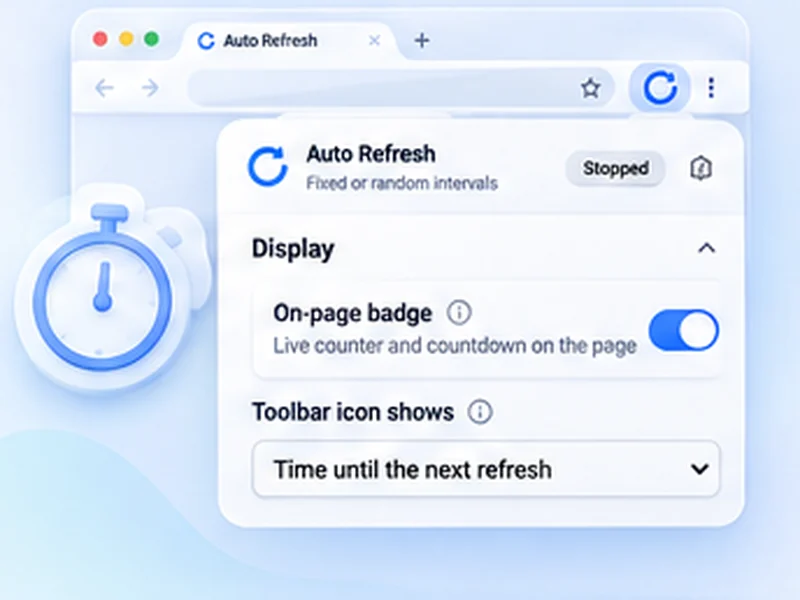

Live scores that update themselves.
Some score and commentary pages do not update on their own. Put them on a 30 second timer and just watch.

How live scores works
Some score and commentary pages do not update on their own. Put them on a 30 second timer and just watch.
Watch the score element with Stop when content changes to get a notification when it moves. Restart it afterwards to keep following.
Quick setup
Open the score page and scroll to your match.
Set Min and Max to 30.
Switch on Keep scroll position and set Stop after to 150.
For score pages that do not refresh on their own
Plenty of score and text-commentary pages stay frozen until you reload them. A 30-second timer keeps them current through the whole match, with your scroll position held on your fixture.
Get told when the score changes
Watch the score element with Stop when content changes for a notification on every goal or wicket. Press Start again afterwards to keep following.
Not for video
A reload restarts any video on the page. Use this on text and score pages, not live streams.
A worked example: a text commentary
Open the live commentary, scroll to the latest entries, and set Min and Max to 30. Switch on Keep scroll position and set Stop after to 150 minutes. Press Start. The page updates through the match and ends by itself afterwards.
Several matches at once
Open each match in its own tab and start a refresh in each. Every tab has its own timer and counter.
If the page already updates itself
Many score sites stream updates and need no refresh. Use this only for pages that stay frozen until reloaded.
At a glance
- Hands free. The page reloads through the whole match.
- Stay on your match. Scroll position is kept, so your fixture stays in view.
- Ends with the game. Set a time limit of a couple of hours.
Questions, answered.
How often should a score page refresh?
Every 30 seconds is enough for most sports.
Will it stop when the match ends?
Set Stop after to the length of the game, plus a margin.
Does it work on any sport's site?
On any page that shows the score as text.
Will it interrupt a stream?
Yes. Do not use it on a page playing video.
Will video streams restart?
Yes, a reload restarts any video on the page. Use it on text and score pages.
Let the page check itself.
Use the free extension for Chrome or Firefox.
Have a different use case in mind?
Share the browser task you would like to make easier. Your idea helps guide what gets built next.